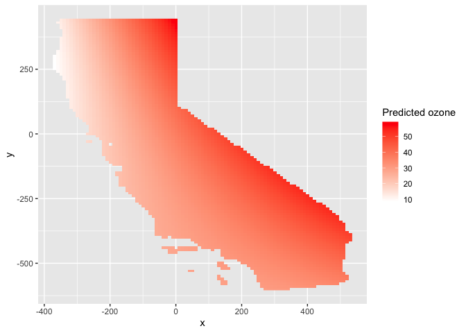
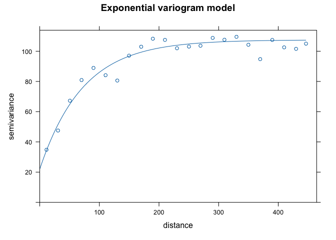
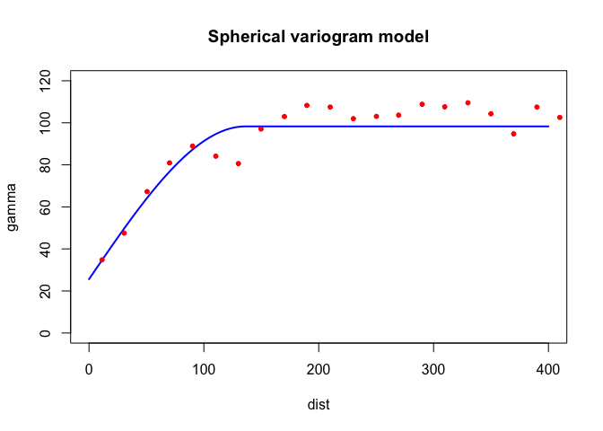

Kriging
GEO 200CN - Quantitative Geography
Professor Noli Brazil
May 29, 2024
In the last lab guide, we went through deterministic methods for interpolating spatial data. In this lab guide, we go through probabilistic or geostatistical spatial interpolation methods. We’ll focus on two popular geostatistical procedures: trend surface analysis and Kriging. This lab guide closely follows OSU Ch. 10. The objectives of this lab are as follows
- Learn how to run a trend surface analysis
- Learn how to estimate a variogram
- Learn how to interpolate values using Ordinary Kriging
- Learn how to interpolate values using Universal Kriging
To help us accomplish these learning objectives, we will use California Air Pollution data. Ground-level ozone is the main component of smog and is the single most widespread air pollutant in the United States. The objective is to spatially interpolate ozone levels in California. After learning how to run trend surface and Kriging methods on California data, you will make comparisons between deterministic and geostatistical methods using Texas data. Lab material has been adapted from Spatial Data Science.
Installing and loading packages
No new packages this lab. Load all necessary packages using
library().
library(sf)
library(gstat)
library(tidyverse)
library(tmap)
library(dismo)
library(terra)Bringing in the data
We will use the airqual dataset to interpolate ozone levels for California (averages for 1980-2009). Download the file kriging.zip from Canvas in the Week 9 Lab and Assignment folder. It contains all the files that will be used in this guide. Bring in the file airqual.shp, which contains ozone levels (among many other variables, which we will not use) for control points scattered throughout California. We’ll keep spatial objects in sf form since many of the kriging functions work with them.
aq <- st_read("airquality.shp")Next, we need to create a template raster to interpolate to. We will interpolate across California, so bring in the file counties.shp as an sf object.
ca <- st_read("counties.shp")Let’s plot the points on CA to see what we got. We’ll use our long
time friend ggplot()
ggplot(data = ca) +
geom_sf() +
geom_sf(data = aq, color = "red")aq is an sf object, but we’ll need a regular data
frame for some of the functions we’ll use to interpolate the data. We
use the function st_drop_geometry() to turn aq
into a regular data frame.
x <- aq %>%
st_drop_geometry()
class(x)## [1] "data.frame"To create the template raster for interpolation, coerce the
sf object of California, ca, to a raster using the
function rast()`.
r <- rast(ca)
res(r) <- 10 # 10 km if your CRS's units are in kmWe’re now ready to interpolate!
Trend surface analysis
OSU begins Chapter 10 discussing trend surface analysis. Trend surface modeling is basically a regression of the variable you want to interpolate on the spatial coordinates of your observed locations. We’ve already done regression before! So, trend surface analysis in regression lingo characterizes the outcome as the variable we want to interpolate OZDLYAV, and the independent variables as the X (longitude) and Y (latitude) coordinates. This is equation 10.3 in OSU and the book calls it a linear trend surface.
Let’s run the model using our friend glm().
reg.ols <- glm(OZDLYAV~x + y,
data=aq)And here is a summary.
summary(reg.ols)##
## Call:
## glm(formula = OZDLYAV ~ x + y, data = aq)
##
## Coefficients:
## Estimate Std. Error t value Pr(>|t|)
## (Intercept) 32.883735 0.672214 48.919 < 2e-16 ***
## x 0.044224 0.004008 11.034 < 2e-16 ***
## y 0.018565 0.003012 6.164 1.58e-09 ***
## ---
## Signif. codes: 0 '***' 0.001 '**' 0.01 '*' 0.05 '.' 0.1 ' ' 1
##
## (Dispersion parameter for gaussian family taken to be 78.33922)
##
## Null deviance: 47042 on 451 degrees of freedom
## Residual deviance: 35174 on 449 degrees of freedom
## AIC: 3258.9
##
## Number of Fisher Scoring iterations: 2Let’s use this model to interpolate across California. Instead of
working off the glm model we created above, we can utilize the
suite of geostatistical functions available in the package
gstat. The package provides basic
functionality for univariable and multivariable geostatistical
analysis. We were introduced to gstat in the last
lab. We’ll use the function gstat() to run a linear
trend surface model.
lm.1 <- gstat(formula=OZDLYAV~1,
locations=~x+y,
degree=1,
data=x)The argument formula=OZDLYAV~1 tells the function to
base the interpolation of OZDLYAV only on the location
coordinates. The argument locations=~x+y define the spatial
data locations (coordinates), where x and y are the
variable names for the longitude and latitude. The argument
degree= establishes a first order trend. Notice that for
data, we use the regular data frame x because
gstat() does not work well with sf objects.
Were interpolating across the California raster template r,
so we use the interpolate() function from the
terra package.
r.m <- interpolate(r, lm.1, debug.level=0)We then need to clip the interpolate raster to CA boundaries.
r.m <- mask(r.m, ca)Finally, we plot
plot(r.m, 1)We can also use ggplot(), noting that the interpolated
values are stored in the variable var1.pred
names(r.m)## [1] "var1.pred" "var1.var"# Plot the map
ggplot(as.data.frame(r.m, xy = TRUE)) +
geom_raster(aes(x = x, y = y, fill = var1.pred)) +
labs(fill = "Predicted ozone") +
scale_fill_gradient(low= "white", high = "red", na.value ="gray") Let’s try another trend. The second order surface polynomial (aka
quadratic polynomial) is a parabolic surface whose equation is given by
the one shown on page 286 in OSU. We use gstat() again, but
change degree to 2.
lm.2 <- gstat(formula=OZDLYAV~1,
locations=~x+y,
degree=2,
data=x)Interpolate this across California’s grid and map.
# Use the regression model output to interpolate the surface
r.m2 <- interpolate(r, lm.2, debug.level=0)
# Clip the interpolated raster to CA
r.m2 <- mask(r.m2, ca)Map the interpolated values
#plot
plot(r.m2, 1)Using ggplot()
ggplot(as.data.frame(r.m2, xy = TRUE)) +
geom_raster(aes(x = x, y = y, fill = var1.pred)) +
labs(fill = "Predicted ozone") +
scale_fill_gradient(low= "white", high = "red", na.value ="gray") 
This interpolation picks up a slight curvature in the east-west trend.
Kriging
OSU calls trend surface analysis “dumb” on page 287. How mean! So, they then turn to Kriging. Kriging interpolates by calculating the weighted average of known values of the neighborhood points.
There are many flavors of kriging. These flavors are described on pages 310-311 in OSU. The most common form of kriging is ordinary kriging. Ordinary kriging assumes stationarity: the mean and variance of the values is constant across the spatial field. OSU describes on page 295 the three steps to interpolate values using kriging.
- Produce a description of the spatial variation in the sample control point data
- Summarize this spatial variation by a regular mathematical function
- Use this model to determine interpolation weights
Let’s go through each step.
Describe the Spatial Variation
This step involves estimating the (semi) variogram. The variogram is the foundation of geostatistical analysis and is a measure of the variance as a function of distance. Basically, the variogram is our model of spatial autocorrelation. Let’s estimate a variogram for OZDLYAV.
First, let’s create a variogram cloud. A variogram cloud
characterizes the spatial autocorrelation across a surface that we have
sampled at a set of control points. The variogram cloud is obtained by
plotting all possible squared differences of observation pairs against
their separation distance. As any point in the variogram cloud refers to
a pair of points in the data set, the variogram cloud is used to point
us to areas with unusual high or low variability. We use the
variogram() function, which calculates the sample
variogram. Here, we set the lag h to be 20 km through the
width argument.
vcloud <- variogram(OZDLYAV~1, locations=aq, width=20, cloud = TRUE)Notice that variogram() is sf friendly,
so we use the aq object.
The first argument OZDLYAV~1 specifies the response
variable (what you are interpolating) and what covariates the
interpolation will be based on. Ordinary kriging relies only on
distance, which is reflected by the formula OZDLYAV~1, and
assumes a constant trend (or a stationary process) for the variable. The
ordinary kriging predictor is a weighted average of the surrounding
observations, where the weight depends on a fitted model to the measured
points, the distance to the prediction location, and the spatial
relationships among the measured values around the prediction
location.
We then plot the cloud, getting a plot like Figure 10.7 in OSU.
plot(vcloud)
The variogram cloud gives us some insight, but need to simplify it a
bit. This is when we turn to the sample variogram. The sample variogram
is estimated using the function variogram() but without the
argument cloud = TRUE.
v.o <- variogram(OZDLYAV~1, locations=aq, width=20)
plot(v.o)
The variogram plot is nothing but a plot of averages of semivariogram cloud values over distance intervals. It is like Figure 10.9 in OSU.
The generated variogram is isotropic, meaning that we are assuming there is a constant trend for the variable. In other words, the spatial variability is the same in all directions. We will examine the situation where there is an apparent spatial trend later in this lab when we discuss universal kriging.
Fit the model variogram
The variogram we constructed is the sample variogram. It is for the observed or sampled points. In order to estimate values at unknown locations, we need to create a model variogram. To generate a model variogram, we need to estimate the following components
- Sill
- Range
- Nugget
The sample variogram we created above can help us estimate these values. We need to eyeball the values from the sample variogram plot. The sill is the y-value where there is no more spatial correlation, the point on the graph where y-values level off, which is around 100. The range is the x-value where the variogram reaches the sill which appears to occur at around 150. The nugget can be thought of as the y-axis intercept, which occurs at an approximate value of 30. We don’t need to get these values exactly correct. We just need to plug reasonable values into the function as starting points. From these starting points, R will then adjust the values to optimize model fit.
You also need to establish the theoretical function that determines
the influence of near and far locations on the estimation. Common
functions include exponential circular, spherical and Gaussian (see
Figure 10.10 in OSU for the shapes). You can check the available models
by typing in vgm() in your console. We’ll start out with
the Exponential function Exp.
We use the fit.variogram() function to fit a model
variogram. The first argument specifies the empirical or sample
variogram. The second argument is the model, with parameters, to be fit
to the sample variogram. The model specifies the sill
psill =, the range range =, the nugget
nugget = and the theoretical model model =.
Plug in the values we eyeballed from the sample variogram as starting
points for the model. fit.variogram will help optimize the
fit of the model using an iterative weighted least squares (IWLS)
method.
fve.o <- fit.variogram(v.o, model = vgm(psill = 100, model = "Exp", range = 150, nugget = 30))The estimating method (IWLS) seeks to optimize the parameters (but conditioned on their starting values which we plug in). Here are the actual parameters that R used to fit the model
fve.o## model psill range
## 1 Nug 21.96589 0.00000
## 2 Exp 85.52938 72.31329With the sample and fit variogram, one can plot them together to see how well the fit was:
plot(variogramLine(fve.o, 400), type='l', ylim=c(0,120), col='blue', main = 'Exponential variogram model')
points(v.o[,2:3], pch=20, col='red')
Here’s another way to plot the variogram and the model.
plot(v.o, fve.o, main = 'Exponential variogram model')
Let’s try a different function (spherical Sph instead of
exponential)
fvs.o <- fit.variogram(v.o, model = vgm(psill = 100, model = "Sph", range = 150, nugget = 30))
fvs.o## model psill range
## 1 Nug 25.59723 0.000
## 2 Sph 72.69835 136.131plot(variogramLine(fvs.o, 400), type='l', ylim=c(0,120) ,col='blue', lwd=2, main = 'Spherical variogram model')
points(v.o[,2:3], pch=20, col='red')
Both look pretty good in this case. What about Gaussian
Gau?
fvg.o <- fit.variogram(v.o, model = vgm(psill = 100, model = "Gau", range = 150, nugget = 30))
fvg.o## model psill range
## 1 Nug 32.45995 0.00000
## 2 Gau 63.75329 58.51846plot(variogramLine(fvg.o, 400), type='l', ylim=c(0,120) ,col='blue', lwd=2, main = 'Gaussian variogram model')
points(v.o[,2:3], pch=20, col='red')Ordinary kriging
Once we have determined an appropriate variogram model we can
interpolate across California. Ordinary kriging is an interpolation
method that uses weighted averages of all,or a defined set of
neighboring observations. To Krig, you always need to establish the
fitted variogram, because the variogram establishes the weights in the
interpolation. See OSU pages 302-306 if you are interested in seeing the
math of how Ordinary Kriging is done. To employ Kriging in R, use the
function gstat().
k.o <- gstat(formula = OZDLYAV~1,
locations = ~x+y,
data = x,
model=fve.o)The first argument is our interpolation formula, second are our observed points, third is our data, and fourth is the variogram model we are using to interpolate, in this case the exponential model fve.o.
Next, we need to predict or interpolate for our grid r.
kp.o <- interpolate(r, k.o, debug.level=0)Let’s plot the predicted values.
# Convert kriged surface to a raster object for clipping
ok.o <- mask(kp.o, ca)
plot(ok.o, 1)
Using ggplot()
ggplot(as.data.frame(ok.o, xy = TRUE)) +
geom_raster(aes(x = x, y = y, fill = var1.pred)) +
labs(fill = "Predicted ozone") +
scale_fill_gradient(low= "white", high = "red", na.value ="gray") How good are our predictions? We run 5-fold cross-validation to
estimate the test prediction error. First, we establish the
RMSE() function we created last lab
guide.
RMSE <- function(observed, predicted) {
sqrt(mean((predicted - observed)^2, na.rm=TRUE))
}Then run 5-fold cross validation using the same for loop from last lab guide
set.seed(1234)
kf <- kfold(nrow(aq))
rmseok <- rep(NA, 5)
for (k in 1:5) {
test <- aq[kf == k, ]
train <- aq[kf != k, ]
gscv <- gstat(formula = OZDLYAV~1, locations = train, model=fve.o)
p <- predict(gscv, newdata = test, debug.level=0)$var1.pred
rmseok[k] <- RMSE(test$OZDLYAV, p)
}We get 5 RMSEs for each fold
rmseok## [1] 5.967864 6.973699 6.667093 8.863368 6.195943What is our 5-fold root mean squared error?
mean(rmseok)## [1] 6.933593Universal kriging
While in Ordinary Kriging it is assumed that the mean is constant
across the entire region of study (second order stationarity), in
Universal Kriging the mean is a function of the site coordinates. This
means we believe there is a trend. Instead of OZDLYAV~1 in
our formula, we use OZDLYAV~x + y, which accounts for the x
and y coordinates of each point in the prediction.
Following the same sequence as above in ordinary kriging , we get the empirical or sample variogram.
v.u <- variogram(OZDLYAV~x + y, locations=aq, width=20)
plot(v.u)Sill looks like 75 (ish), range is 90 (ish), and nugget is 30 (ish). We now get the variogram model using the exponential function.
fve.u <- fit.variogram(v.u, model = vgm(psill = 75, model = "Exp", range = 90, nugget = 30))Now, we krige
k.u <- gstat(formula = OZDLYAV~x + y,
locations = ~x+y,
data = x,
model=fve.u)Predict
kp.u <- interpolate(r, k.u, debug.level=0)Plot the predictions to see what they look like
# Convert kriged surface to a raster object for clipping
ok.u <- mask(kp.u, ca)
plot(ok.u, 1)Using ggplot()
ggplot(as.data.frame(ok.u, xy = TRUE)) +
geom_raster(aes(x = x, y = y, fill = var1.pred)) +
labs(fill = "Predicted ozone") +
scale_fill_gradient(low= "white", high = "red", na.value ="gray") 
And the 5-fold RMSE is
rmseuk <- rep(NA, 5)
for (k in 1:5) {
test <- aq[kf == k, ]
train <- aq[kf != k, ]
gscv <- gstat(formula = OZDLYAV~x + y, locations = train, model=fve.u)
p <- predict(gscv, newdata = test, debug.level=0)$var1.pred
rmseuk[k] <- RMSE(test$OZDLYAV, p)
}
mean(rmseuk)## [1] 7.084023Comparing methods
Kriging is one of the most common interpolation methods in a Geographer’s toolkit. But, it’s not the only tool. In fact, we went through several in last lab guide. Let’s go back to these and make some comparisons with the new friends we made in today’s lab.
You must be tired of running models on California. Let’s predict precipitation for the great state of Texas! Bring in the files precip and texas.
P <- st_read("precip.shp")
TX <- st_read("texas.shp")You will be interpolating the variable Precip_in in the P data set, which is average precipitation in inches for several meteorological sites in Texas. Let’s map the samples cases.
ggplot(data = TX) +
geom_sf() +
geom_sf(data = P, color = "red")We need to convert TX to a raster to create a grid template like we did above with California.
r <- rast(TX)
res(r) <- 10Now, you’re ready to interpolate.
Question 1: Run the local spatial average method using 3-nearest neighbors to interpolate Texas precipitation levels across the state.
Question 2: Run the inverse distance weighted (IDW) method.
Question 3: Run a quadratic polynomial trend surface model.
Question 4: Run universal kriging. Hint: Don’t just
copy and paste the code from the California case. Texas is different
from California, so the parameters will be different. In particular,
play around with the cutoff = and width =
values when you create the sample variogram. The cutoff represents the
maximal spatial distance taken into account between two observations.
The width is the lag or distance interval over which the semi-variance
is calculated. You want to make sure you can see enough of the variogram
top to bottom and left to right to estimate the sill, range and nugget.
Question 5: Use 5-fold cross-validation to determine which of the four methods is the best based on RMSE.
Question 6: Map the interpolated values for the best model.
Question 7: Show where the largest difference exist between IDW and the quadratic trend model.
And we’re done!

This
work is licensed under a
Creative
Commons Attribution-NonCommercial 4.0 International License.
Website created and maintained by Noli Brazil